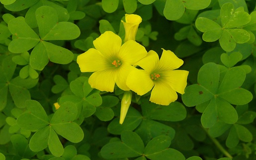

Basonym of Drug
Changeri
Main Synonym
- Amla patrika
- Dantashatha
- Chukrika
- Chatuschada
- Amlalonika
- Ashmantaka
- Shafari
- Kushali
- Amlapatraka
Regional Name
- Bengali: Amarula
- Gujarati: Aamboti
- Hindi: Changeri, Tinpatiya, Ambilona
- Kannada: Sibargi
- Tamil: Puliyore
- Telugu: Puli Chit
- English: Indian Sorrel
Botanical Name
Oxalis corniculata
Family
Oxalidaceae
Classification (Gana)
- Acharya Charak, Shusruta, and Vagbhatta: Mentioned in Shaka Varga
External Morphology
Short, perennial, creeping herb
Useful Parts
Important Phytoconstituents
- Malic Acid
- Citric Acid
- Vitexin
- Tartaric Acid
Rasa Panchak
- Rasa: Amla, Kashaya
- Guna: Laghu, Ruksha
- Virya: Ushna
- Vipaka: Amla
Action
Kaphavatahara
Therapeutic Indications
- Deepen (increase appetite)
- Grahi (stops excessive secretions)
- Arshohara (useful in piles)
- Atisara-Grahani Hara (anti-diarrheal, and antidysentery)
Therapeutic Uses
- Arsha: Changeri paste with rice gruel, and jaggery are useful in piles.
- Sotha: Paste is applied externally to get relief from inflammations.
- Dhatura Visha: Juice of Changeri is useful as an antidote for Datura metal poisoning.
Dose
Formulations
- Sunnishnak Changeri Ghrita
- Changeri Ghrita
- Nagaradi Ghrita
Adverse Effect
Not Known
Remedial Measure
Not Required